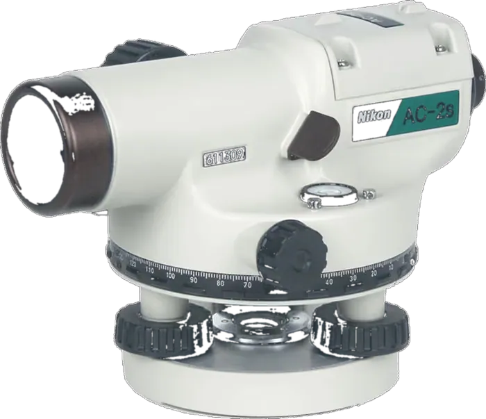

Total stations
Nikon XF series: a total station for everyone
Mechanical total stations with dual full-face displays, clear optics for bright daylight and an 800 m non-prism EDM.
Learn more TrimbleGNSS · Total Stations · Scanning
TrimbleGNSS · Total Stations · Scanning DJI EnterpriseDrones · LiDAR · Dock
DJI EnterpriseDrones · LiDAR · Dock Esri ArcGISGIS & SDI
Esri ArcGISGIS & SDI Spectra GeospatialGNSS & Robotic Stations
Spectra GeospatialGNSS & Robotic Stations Nikon PrecisionOptical Survey
Nikon PrecisionOptical Survey US RadarGround Penetrating Radar
US RadarGround Penetrating Radar Seafloor SystemsHydrographic Survey
Seafloor SystemsHydrographic Survey IBM Tape StorageEnterprise Data Archive
IBM Tape StorageEnterprise Data Archive XGRIDSHandheld SLAM LiDAR
XGRIDSHandheld SLAM LiDAR

Mechanical total stations with dual full-face displays, clear optics for bright daylight and an 800 m non-prism EDM.
Learn moreOfficial films from Spectra Geospatial, the home of Nikon survey instruments.
Where Nikon instruments earn their keep.
Rugged optical and mechanical instruments, backed by local calibration.
Mechanical total stations
Packed with features for everyday survey
Digital angle measurement
Compact digital theodolite
Elevation and cut/fill measurement
Dependable everyday level
Locate Nikon survey instrument dealers through Spectra Geospatial.
Learn moreManuals, firmware and technical help for Nikon and Spectra instruments.
Learn more
Hands-on, instructor-led courses for field crews and office teams, delivered in Kampala.
Learn more
Our Kampala lab services, calibrates and supports your instruments so they stay survey-ready.
Learn moreNikon instruments are built to be simple and rugged — our job is to make sure they stay accurate for years of daily use on Ugandan construction sites.
Our facility is equipped with optical collimators and EDM baseline test benches to service and calibrate Nikon total stations, theodolites, and automatic levels.
Telephone and in-person support for setup, adjustment, and everyday troubleshooting so field crews lose as little time as possible on-site.
Hands-on practicals covering setup, angle/elevation measurement, and field best practices for new survey technicians and construction site staff.
Our application engineers help you pick the right Nikon instrument for your crew and budget, with certified calibration and support once it’s on-site.